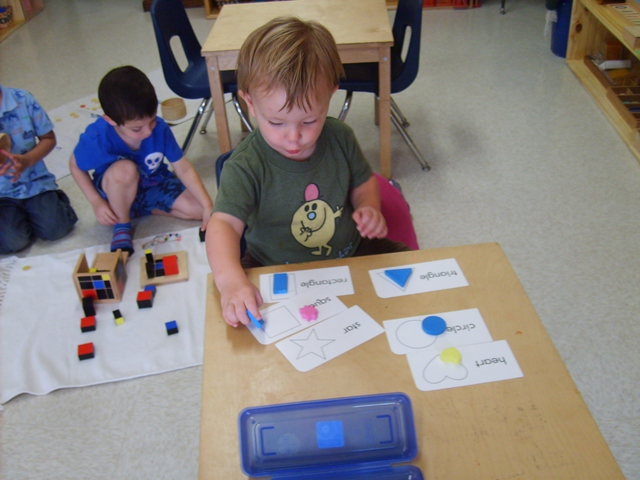

By placing children of different ages in one classroom, each child is exposed to a wide range of possibilities. New students benefit from learning alongside older, more experienced children; later on, they help others with the skills they've already mastered — developing social skills and cultural sensitivity essential in today's world.
Emphasis is placed on each child progressing at their own pace under well-guided supervision. The teacher gives a presentation and spends individual time with the child to ensure they understand what's expected, then guides them based on ongoing observation. Parents are kept informed of their child's progress along the way.

Health checks, temperature check, hand washing, and preparations to start the day.
Varies with weather conditions.
Nutritious snacks are served.
Children work with materials for math, practical life, sensorial, and language, plus daily lessons in arts, science, discovery, reading, and culture.
Story telling, group lessons, music, weather, calendar, and culture.
Large motor skills, art, exploration, and a bit of gardening — including the occasional earthworm hunt.
Children bring their own lunch; we encourage zero-waste, reusable containers. Lunch is a very social time of day.
Children are encouraged to take a healthy nap.
Children roll their nap mats and blankets to be put away.
Healthy, nutritious snacks are provided.
Arts, music, movement, exercise, and outdoor play as weather allows.
Cleanup, and the day ends.
We serve two nutritious snacks for full-day students, and one snack for half-day students.